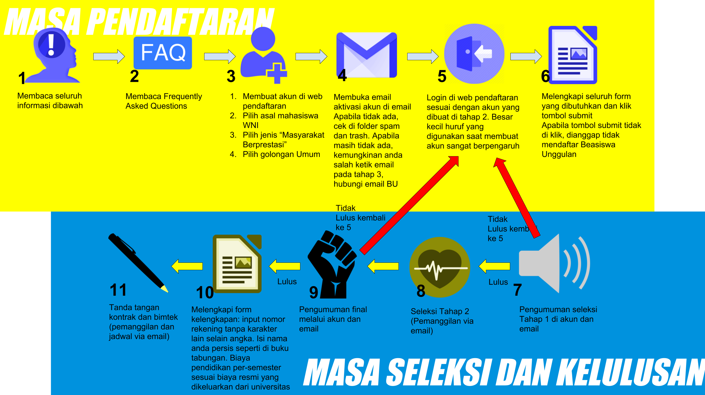

Beasiswa Unggulan Pegawai Kemendikbud
FAQ
DOWNLOAD FLYER
Beasiswa Pegawai Kemendikbud merupakan pemberian beasiswa kepada PNS di lingkungan Kementerian Pendidikan dan Kebudayaan untuk melanjutkan pendidikan Magister atau Doktor di dalam atau di luar negeri melalui mekanisme tugas belajar.
Program Beasiswa ini dapat dilaksanakan secara Individu yang diusulkan oleh unit utama atau bersifat kolektif berdasarkan kebutuhan Kementerian Pendidikan dan Kebudayaan.
Bagi guru, silakan mendaftar Beasiswa Unggulan Masyarakat Berprestasi. Beasiswa ini tidak dapat diikuti oleh Pegawai pelajar on-going.
PERSYARATAN DAN KELENGKAPAN BERKAS
Beasiswa Degree Jenjang S2:
- Maksimal 37 Tahun
- IPK S1 minimal 3.00
- TOEFL ITP 450/IBT 45, IELTS 5.0 untuk tujuan dalam negeri, sedangkan untuk luar negeri TOEFL ITP 550/IBT 79, IELTS 6.5
Beasiswa Degree Jenjang S3:
- Maksimal 40 Tahun
- IPK S2 minimal 3.25
- TOEFL ITP 450/IBT 45, IELTS 5.0 untuk tujuan dalam negeri, sedangkan untuk luar negeri TOEFL ITP 550/IBT 79, IELTS 6.5
KETENTUAN
- Mempunyai Sasaran Kerja Pegawai (SKP) minimal 1 tahun terakhir sekurang-kurangnya bernilai baik;
- Tidak sedang:
- Menjalani cuti di luar tanggungan negara;
- Melaksanakan tugas secara penuh di luar instansi induknya;
- Menjalani hukuman karena melakukan tindak pidana kejahatan;
- Mengajukan keberatan ke Badan Pertimbangan Kepegawaian (BAPEK) atau upaya
- hukum (gugatan) ke pengadilan terkait dengan penjatuhan hukuman disiplin;
- Dalam proses penjatuhan hukuman disiplin tingkat sedang atau berat;
- Menjalani hukuman disiplin tingkat sedang atau berat;
- Dalam proses perkara pidana, baik tindak pidana kejahatan maupun pelanggaran;
- Melaksanakan kewajiban ikatan dinas setelah tugas belajar;
- Melaksanakan pendidikan dan pelatihan penjenjangan;
- Tidak pernah:
- Gagal dalam tugas belajar yang disebabkan oleh kelalaiannya;
- Dibatalkan mengikuti tugas belajar karena kesalahannya.
KELENGKAPAN BERKAS:
- Kartu Tanda Penduduk (KTP).
- LoA Unconditional.
- ljazah dan transkrip nilai terkahir.
- Sertifikat TOEFL/IELTS.
- Proposal rencana studi.
- Surat rekomendasi dari pejabat unit utama atau setingkat eselon II.
- Surat pernyataan pegawai Kemendikbud (download format disini).
- Surat keterangan sehat.
- SKP.
PEGAWAI
Pendaftaran dilakukan secara online di: http://buonline.beasiswaunggulan.kemdikbud.go.id/